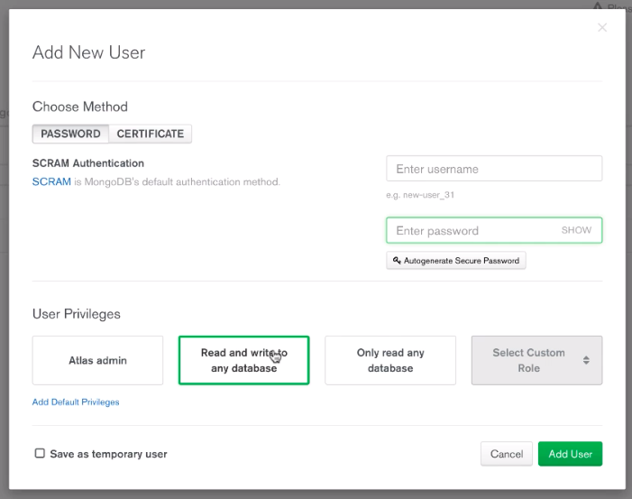

1.1 - Configurez votre environnement de développement -
Installez Node
Accédez à NodeJS.org pour télécharger puis installer la dernière version de Node.
Cela a pour effet d'installer le runtime JavaScript de Node, ce qui vous permet par là même d'exécuter les serveurs Node.
Cela installe également Node Package Manager ou npm, outil précieux pour l'installation des packages nécessaires à la création de vos projets.
Il est maintenant temps de créer votre répertoire de travail pour ce cours : vous pouvez le nommer
go-fullstack
par exemple.
Une fois le répertoire créé, il vous faudra cloner le code pour l'application front-end dans un sous-répertoire appelé frontend .
À partir de votre répertoire de travail, entrez la commande ci-dessous :
Cela installera toutes les dépendances requises par l'application front-end et lancera le serveur de développement.
Désormais, si vous accédez à http://localhost:4200, vous devriez voir l'interface suivante (en supposant que vous avez bien suivi les étapes ci-dessus) :
Page d'accueil de l'application front-end
N'hésitez pas à explorer le contenu pour avoir un aperçu de ce que nous allons créer.
Ça ne représente pas encore beaucoup, mais c'est là que vous intervenez !
La dernière étape consiste à créer un second sous-répertoire dans votre répertoire de travail, appelé backend.
C'est là que vous créerez l'application Express.
Veillez à avoir toujours un terminal qui exécute npm run start lorsque vous travaillez sur ce cours.
De cette façon, vous pourrez toujours tester votre code en temps réel !
Avant de nous lancer dans l'écriture du code, qu'est-ce que Node ?
Qu'est-ce qu'Express ?
Y-a-t-il une différence ? Node est le runtime qui permet d'écrire toutes nos tâches côté serveur, en JavaScript, telles que la logique métier, la persistance des données et la sécurité.
Node ajoute également des fonctionnalités que le JavaScript du navigateur standard ne possède pas, comme par exemple l'accès au système de fichiers local. Express est, pour faire court, un framework reposant sur Node qui facilite la création et la gestion des serveurs Node, comme vous le verrez à mesure que nous progresserons dans ce cours.
Initialisez votre projet
Avant de commencer, vous pouvez initialiser un dépôt Git en exécutant
git init
depuis votre dossier backend .
N'oubliez pas de créer un fichier
.gitignore
contenant la ligne
node_modules
afin de ne pas envoyer ce dossier (qui deviendra volumineux) vers votre dépôt distant.
Si, contrairement à moi, vous créez le dépôt Git en premier, vous pourrez ajouter son URL distant à la configuration du projet Node pendant l'étape suivante.
À partir de votre dossier backend , exécutez la commande de terminal npm init pour initialiser votre projet.
Vous pouvez utiliser les options par défaut ou les modifier si vous le souhaitez.
Cependant, votre point d'entrée doit être server.js .
Vous le créerez bientôt.
Ce processus génère un fichier package.json vierge, dans lequel seront enregistrés les détails de tous les packages npm que nous utiliserons pour ce projet.
Créez un fichier server.js à l'intérieur de votre dossier backend .
Il contiendra votre premier serveur Node.
Démarrez un serveur basique
Pour créer un serveur Node dans votre fichier server.js , il vous faudra le code suivant :
const http = require('http');
const server = http.createServer((req, res) => {
res.end('Voilà la réponse du serveur !');
});
server.listen(process.env.PORT || 3000);
Ici, vous importez le package HTTP natif de Node et l'utilisez pour créer un serveur, en passant une fonction qui sera exécutée à chaque appel effectué vers ce serveur.
Cette fonction reçoit les objets request et response en tant qu'arguments.
Dans cet exemple, vous utilisez la méthode end de la réponse pour renvoyer une réponse de type string à l'appelant.
Node utilise le système de module CommonJS, donc pour importer le contenu d'un module JavaScript, on utilise le mot-clé require plutôt que le mot-clé import . Ce système est particulièrement utile car il nous permet d'importer les modules de base de Node très facilement (comme le module http ici) sans spécifier le chemin exact du fichier.
Node sait qu'il doit importer un module de base quand on ne spécifie pas un chemin relatif (qui commence par
./
ou
/
, par exemple).
Vous verrez dans le prochain chapitre que nous utilisons aussi le mot-clé
require
pour importer nos propres fichiers en utilisant leur chemin relatif,
comme
./app.js
ou même
./app
,
tout simplement –
require
nous permet d'omettre l'extension
.js
.
Dans la dernière ligne, vous configurez le serveur pour qu'il écoute :
soit la variable d'environnement du port grâce à process.env.PORT :
si la plateforme de déploiement propose un port par défaut, c'est celui-ci qu'on écoutera ;
soit le port 3000, ce qui nous servira dans le cas de notre plateforme de développement.
Démarrez le serveur en exécutant node server à partir de la ligne de commande.
Pour vérifier qu'il envoie la réponse correcte, utilisez une fenêtre de navigateur pour accéder à http://localhost:3000 (en supposant que vous ayez bien suivi les étapes ci-dessus).
Vous pouvez également utiliser un outil de test tel que Postman pour effectuer une requête GET (ou tout autre type de requête d'ailleurs, car notre serveur ne fait actuellement aucune distinction !) vers la même URL :http://localhost:3000(à nouveau, en supposant que vous ayez bien suivi les étapes ci-dessus).
Installez nodemon
Pour simplifier le développement Node, vous souhaiterez peut-être installer nodemon .
Pour ce faire, exécutez la commande suivante :
npm install -g nodemon
Désormais, au lieu d'utiliser node server pour démarrer votre serveur, vous pouvez utiliser nodemon server .
Il surveillera les modifications de vos fichiers et redémarrera le serveur lorsqu'il aura besoin d'être mis à jour.
Cela vous garantit d'avoir toujours la dernière version de votre serveur dès que vous sauvegardez, sans devoir relancer manuellement le serveur !
Vous n'aurez qu'à relancer la requête vers votre serveur.
>
Maintenant que vous savez démarrer un serveur de développement Node, dans le chapitre suivant, nous ajouterons Express au projet pour simplifier encore plus la création de notre API.
Coder des serveurs Web en Node pur est possible, mais long et laborieux.
En effet, cela exige d'analyser manuellement chaque demande entrante.
L'utilisation du framework Express simplifie ces tâches, en nous permettant de déployer nos API beaucoup plus rapidement.
Installons-le maintenant.
Installez Express
Pour ajouter Express à votre projet, exécutez la commande suivante à partir de votre dossier backend :
npm install --save express
Créez un fichier app.js , où vous placerez votre application Express :
app.set('port', process.env.PORT || 3000);
const server = http.createServer(app);
server.listen(process.env.PORT || 3000);
Effectuer une demande vers ce serveur générera une erreur 404, car notre application n'a encore aucun moyen de répondre.
Configurons une réponse simple pour nous assurer que tout fonctionne correctement, en effectuant un ajout à notre fichier app.js :
const express = require('express');
const app = express();
app.use((req, res) => {
res.json({ message: 'Votre requête a bien été reçue !' });
});
module.exports = app;
Si vous essayez d'effectuer une requête à votre serveur, vous devez récupérer un objet JSON contenant le message que nous avons spécifié.
Maintenant que notre serveur Node gère correctement notre application Express, voyons comment nous pouvons ajouter des fonctionnalités à l'application.
- Ajoutez des middleware -
Une application Express est fondamentalement une série de fonctions appelées middleware.
Chaque élément de middleware reçoit les objets request et response , peut les lire, les analyser et les manipuler, le cas échéant.
Le middleware Express reçoit également la méthode next , qui permet à chaque middleware de passer l'exécution au middleware suivant.
Vous retrouvez ci-desous l'intégralité du code :
Dans
app.use((req, res, next) => {
res.json({ message: 'Votre requête a bien été reçue !' });
next();
});
app.use((req, res, next) => {
console.log('Réponse envoyée avec succès !');
});
module.exports = app;
Cette application Express contient quatre éléments de middleware :
le premier enregistre « Requête reçue ! » dans la console et passe l'exécution ;
le deuxième ajoute un code d'état 201 à la réponse et passe l'exécution ;
le troisième envoie la réponse JSON et passe l'exécution ;
le dernier élément de middleware enregistre « Réponse envoyée avec succès ! » dans la console.
Il s'agit d'un serveur très simple et qui ne fait pas grand-chose pour l'instant, mais il illustre comment le middleware fonctionne dans une application Express.
Améliorez server.js
Avant d'aller plus loin dans le cours, apportons quelques améliorations à notre fichier server.js , pour le rendre plus stable et approprié pour le déploiement :
Il est temps d'ajouter les fonctionnalités dont notre application front-end a besoin et de regarder le système complet prendre forme !
Votre application front-end doit s'exécuter dans un navigateur.
Exécutez donc npm run start à partir du répertoire front-end, accédez à http://localhost:4200 avec votre navigateur puis cliquez sur « Parties 1 + 2 ».
Remettre des articles en vente
Comme vous avez pu le remarquer, l'application front-end affiche actuellement un spinner et indique une erreur dans la console.
Cela est dû au fait qu'elle tente d'accéder à notre API (qui n'existe pas encore !) et de récupérer les articles en vente.
Essayons de rendre ces articles accessibles.
Dans votre fichier app.js , remplacez tout le middleware par le suivant :
app.use('/api/stuff', (req, res, next) => {
const stuff = [
{
_id: 'oeihfzeoi',
title: 'Mon premier objet',
description: 'Les infos de mon premier objet',
imageUrl: 'https://cdn.pixabay.com/photo/2019/06/11/18/56/camera-4267692_1280.jpg',
price: 4900,
userId: 'qsomihvqios',
},
{
_id: 'oeihfzeomoihi',
title: 'Mon deuxième objet',
description: 'Les infos de mon deuxième objet',
imageUrl: 'https://cdn.pixabay.com/photo/2019/06/11/18/56/camera-4267692_1280.jpg',
price: 2900,
userId: 'qsomihvqios',
},
];
res.status(200).json(stuff);
});
La première différence que vous remarquerez est l'argument supplémentaire passé à la méthode use :
nous lui passons un string, correspondant à la route pour laquelle nous souhaitons enregistrer cet élément de middleware.
Dans ce cas, cette route sera http://localhost:3000/api/stuff , car il s'agit de l'URL demandée par l'application front-end.;
Dans ce middleware, nous créons un groupe d'articles avec le schéma de données spécifique requis par le front-end. Nous envoyons ensuite ces articles sous la forme de données JSON, avec un code 200 pour une demande réussie.;
Si vous effectuez une demande GET vers cette route (aussi appelée endpoint) à partir de Postman,
vous verrez que vous recevrez le groupe de stuff mais que l'actualisation du navigateur ne semble pas fonctionner.
Que se passe-t-il donc exactement ici ?
Erreurs de CORS
CORS signifie « Cross Origin Resource Sharing ».
Il s'agit d'un système de sécurité qui, par défaut, bloque les appels HTTP d'être effectués entre des serveurs différents, ce qui empêche donc les requêtes malveillantes d'accéder à des ressources sensibles.
Dans notre cas, nous avons deux origines : localhost:3000 et localhost:4200 , et nous souhaiterions qu'elles puissent communiquer entre elles.
Pour cela, nous devons ajouter des headers à notre objet response .
De retour au fichier app.js , ajoutez le middleware suivant avant la route d'API :
d'accéder à notre API depuis n'importe quelle origine ( '*' ) ;
d'ajouter les headers mentionnés aux requêtes envoyées vers notre API ( Origin , X-Requested-With , etc.) ;
d'envoyer des requêtes avec les méthodes mentionnées ( GET , POST , etc.).
Comme vous pouvez le voir dans le code, le middleware ne prend pas d'adresse en premier paramètre afin de s'appliquer à toutes les routes.
Cela permettra à toutes les demandes de toutes les origines d'accéder à votre API.
Vous pouvez également ajouter des URL d'images valides aux stuff renvoyés par l'API, en terminant la route GET.
Si vous actualisez à présent l'application front-end, vous devriez voir vos articles en vente :
Maintenant que vous avez correctement implémenté une route basique pour remettre les stuff en vente, voyons comment autoriser les utilisateurs à proposer leurs propres articles à la vente.
Bien que nous ne puissions pas, pour le moment, stocker de données envoyées par l'utilisateur, puisque nous n'avons configuré aucune base de données, nous pouvons du moins veiller à recevoir correctement les données du front-end.
L'application front-end contient un formulaire « Vendre un article », qui envoie une demande POST (contenant l'article à vendre) à notre route api/stuff .
Voyons comment nous pouvons capturer ces données.
Pour gérer la requête POST venant de l'application front-end, on a besoin d'en extraire le corps JSON.
Pour cela, vous avez juste besoin d'un middleware très simple, mis à disposition par le framework Express.
Juste après la déclaration de la constante
app
, ajoutez :
app.use(express.json());
Avec ceci, Express prend toutes les requêtes qui ont comme Content-Type
application/json
et met à disposition leur
body
directement sur l'objet req, ce qui nous permet d'écrire le middleware POST suivant :
Au lieu de l'écrire dans un middleware .use() qui traiterait toutes les requêtes, nous allons l'écrire dans un .post() qui ne traitera que les requêtes de type POST :
soit placer la route POST au-dessus du middleware pour les requêtes GET,
car la logique GET interceptera actuellement toutes les requêtes envoyées à votre endpoint
/api/stuff
,
étant donné qu'on ne lui a pas indiqué de verbe spécifique.
Placer la route POST au-dessus interceptera les requêtes POST, en les empêchant d'atteindre le middleware GET.
Désormais, si vous remplissez le formulaire dans l'application front-end et que vous l'envoyez, l'objet que vous venez de créer doit s'enregistrer dans votre console Node !
En passant votre middleware à
app.post()
au lieu de
app.use()
, il répondra uniquement aux requêtes de type POST.
En résumé
Dans cette première partie du cours, vous avez :
configuré votre environnement de développement, avec toutes les dépendances requises pour démarrer ;
démarré votre premier serveur Node et l'avez utilisé pour gérer votre première application Express ;
créé deux routes pour votre application, et vous avez également implémenté CORS pour vous assurer que le front-end pouvait effectuer des appels vers votre application en toute sécurité.
Dans la partie suivante du cours, vous ajouterez la couche de base de données MongoDB.
Celle-ci est essentielle pour votre application et permettra de la rendre entièrement dynamique.
Jusqu'à présent, nous n'avons pas pu faire persister de données ou rendre notre application entièrement dynamique.
Mais tout cela est sur le point de changer, car nous intégrons la couche de base de données de notre serveur : MongoDB.
Qu'est-ce qu'une base de données ?
Une base de données, en gros, est une collection de données structurées.
La structure des données, ainsi que l'organisation de la collection dépendent du type de base de données.
Il y a deux types de base qui nous intéresseront ici : SQL et NoSQL.
Qu'est-ce qu'une base de données SQL ?
Une base de données SQL est une base de données relationnelle qui emploie le langage Structured Query Language pour gérer les données qu'elle contient.
Généralement, une base de données SQL organise ses données dans des tables selon des schémas stricts.
Par exemple, si on décide qu'un utilisateur a un prénom, un nom et une adresse mail, on aura une table
Users
avec des colonnes
first_name
,
last_name
et
email
,
et chaque rangée correspondra à un utilisateur.
Pour être un utilisateur valide, chaque utilisateur doit avoir un prénom, un nom et une adresse mail, donc on peut être certain que chaque utilisateur tiré de la base de données aura ces attributs.
Dans une base de données SQL, les relations entre les différentes tables sont très importantes.
Pour cette raison, notre table
Users
aura également une colonne
id
pour l'identifiant individuel unique de chaque utilisateur.
Cela signifie que l'on peut faire référence à un utilisateur depuis une autre table.
Par exemple, on pourrait avoir une table
Orders
pour les commandes des utilisateurs.
Chaque commande doit appartenir à un utilisateur, donc on fera référence à l'identifiant de l'utilisateur dans la colonne
user_id
de la table
Orders
.
Les bases de données SQL (comme MySQL ou PostgreSQL) sont très bien adaptées aux données relationnelles et pour des données où des définitions fortes sont nécessaires.
Cependant, dans le contexte de projets plus petits, des MVP ou des startups, on ne sait peut-être pas encore à quoi ressemblera notre dernier modèle de données.
On souhaitera aussi potentiellement pouvoir grandir rapidement (il est très difficile d'agrandir une base de données SQL au-delà d'une certaine limite) pour pouvoir gérer un plus grand nombre d'utilisateurs.
Voilà où le NoSQL montre son utilité, en particulier MongoDB.
Qu'est-ce que MongoDB ?
MongoDB est une base de données NoSQL.
Cela signifie que l'on ne peut pas utiliser SQL pour communiquer avec.
Les données sont stockées comme des collections de documents individuels décrits en JSON (JavaScript Object Notation).
Il n'y a pas de schéma strict de données (on peut écrire, en gros, ce que l'on veut où l'on veut), et il n'y a pas de relation concrète entre les différentes données.
Cependant, il existe des outils (que vous découvrirez rapidement !) pour nous aider à subvenir à ces besoins.
Les avantages principaux de MongoDB sont son évolutivité et sa flexibilité.
Le site officiel décrit MongoDB comme étant "construit pour des personnes qui construisent des applications Internet et des applications métier qui ont besoin d'évoluer rapidement et de grandir élégamment".
La compétence MongoDB est donc très recherchée dans les startups et PME.
Un autre avantage est la facilité avec laquelle on communique avec la base de données avec JavaScript, avec les documents décrits en JSON.
Cela vous permet d'appliquer les connaissances JS que vous avez déjà à la couche base de données !
Configurez MongoDB Atlas
Bien qu'il soit possible de télécharger et d'exécuter MongoDB sur votre propre machine
(reportez-vous au site Web de MongoDB pour en savoir plus),
pour ce cours nous utiliserons la couche gratuite de MongoDB Atlas, la « database as a service » (base de données en tant que service).
Accédez au site Web de MongoDB et inscrivez-vous pour obtenir un compte gratuit.
Une fois que vous avez accès à votre tableau de bord, créez un cluster puis configurez-le avec l'option AWS et uniquement les options gratuites afin de pouvoir développer gratuitement.
Pendant le démarrage de votre cluster, vous pouvez accéder à l'onglet Database Access.
D'abord, vous devrez ajouter un utilisateur disposant de la capacité de lecture et d'écriture dans n'importe quelle base de données.
Choisissez le nom d'utilisateur ainsi que le mot de passe de votre choix et notez-les, car vous en aurez besoin pour connecter votre API à votre cluster.

Création d'un nouvel utilisateur en « read and write »
Vous devrez également accéder à l'onglet Network Access,
cliquer sur Add IP Adress
et autoriser l'accès depuis n'importe où ( Add access from Anywhere).
Une fois la création de votre cluster terminée, vous pouvez passer à la section suivante.
Connectez votre API à votre cluster MongoDB
Depuis MongoDB Atlas, cliquez sur le bouton Connect et choisissez Connect your application .
Sélectionnez bien la version la plus récente du driver Node.js, puis Connection String Only , et faites une copie de la chaîne de caractères retournée.
De retour sur votre projet, installez le package Mongoose en exécutant, à partir du dossier backend , la commande suivante :
npm install mongoose
Mongoose est un package qui facilite les interactions avec notre base de données MongoDB.
Il nous permet de :
valider le format des données ;
gérer les relations entre les documents ;
communiquer directement avec la base de données pour la lecture et l'écriture des documents.
Tout cela nous permet de dépasser plusieurs des obstacles que l'on peut rencontrer avec des bases de données NoSQL,
et d'appliquer nos connaissances en JavaScript à une base encore plus fonctionnelle !
Une fois l'installation terminée, importez mongoose dans votre fichier app.js en ajoutant la constante suivante :
const mongoose = require('mongoose');
Juste en dessous de votre déclaration de constante app , ajoutez la ligne suivante.
Veillez à remplacer l'adresse SRV par la vôtre et la chaîne <"PASSWORD"> par votre mot de passe utilisateur MongoDB :
Après enregistrement voire redémarrage de votre serveur Node si nécessaire, vous devriez voir le message « Connexion à MongoDB Atlas réussie ! » dans la console.
Votre API est à présent connectée à votre base de données et nous pouvons commencer à créer des routes serveur afin d'en bénéficier.
En résumé
Pour des applications qui ont besoin d'évoluer rapidement, les bases de données NoSQL comme MongoDB sont souvent un bon choix de technologie.
MongoDB Atlas permet d'héberger gratuitement une base de données MongoDB.
Le package Mongoose facilite les interactions entre votre application Express et votre base de données MongoDB.
L'un des avantages que nous avons à utiliser Mongoose pour gérer notre base de données MongoDB est que nous pouvons implémenter des schémas de données stricts,
qui permettent de rendre notre application plus robuste.
Commençons par créer un schéma Thing (« chose ») pour tout objet mis en vente dans notre application.
Créez un schéma Thing
Dans votre dossier backend , créez un dossier appelé models et, dans ce nouveau dossier, un fichier appelé thing.js :
nous créons un schéma de données qui contient les champs souhaités pour chaque Thing,
indique leur type ainsi que leur caractère (obligatoire ou non).
Pour cela, on utilise la méthode Schema mise à disposition par Mongoose.
Pas besoin de mettre un champ pour l'Id puisqu'il est automatiquement généré par Mongoose,
ensuite, nous exportons ce schéma en tant que modèle Mongoose appelé « Thing »,
le rendant par là même disponible pour notre application Express.
En résumé
La méthode
Schema
de Mongoose vous permet de créer un schéma de données pour votre base de données MongoDB.
Pour pouvoir utiliser notre nouveau modèle Mongoose dans l'application, nous devons l'importer dans le fichier app.js :
const Thing = require('./models/thing');
Maintenant, remplacez la logique de votre route POST par :
app.post('/api/stuff', (req, res, next) => {
delete req.body._id; ******On supprime l'_Id envoyé par le front-end
const thing = new Thing({
...req.body ****On recupère le body
});
thing.save()
.then(() => res.status(201).json({ message: 'Objet enregistré !'}))
.catch(error => res.status(400).json({ error }));
});
Ici, vous créez une instance de votre modèle Thing en lui passant un objet JavaScript contenant toutes les informations requises du corps de requête analysé (en ayant supprimé en amont le faux_id envoyé par le front-end).
L'opérateur spread ... est utilisé pour faire une copie de tous les éléments de req.body .
Pour plus d'informations sur l'opérateur spread, rendez-vous sur la documentation de MDN.
Ce modèle comporte une méthode save() qui enregistre simplement votre Thing dans la base de données.
La base de données MongoDB est fractionnée en collections : le nom de la collection est défini par défaut sur le pluriel du nom du modèle.
Ici, ce sera Things .
La méthode save() renvoie une Promise.
Ainsi, dans notre bloc then() , nous renverrons une réponse de réussite avec un code 201 de réussite.
Dans notre bloc catch() , nous renverrons une réponse avec l'erreur générée par Mongoose ainsi qu'un code d'erreur 400.
Récupération de la liste de Things en vente
Désormais, nous pouvons implémenter notre route GET afin qu'elle renvoie tous les Things dans la base de données :
Dans l'exemple ci-dessus, nous utilisons la méthode find() dans notre modèle Mongoose afin de renvoyer un tableau contenant tous les Things dans notre base de données.
À présent, si vous ajoutez un Thing , il doit s'afficher immédiatement sur votre page d'articles en vente.
En revanche, si vous cliquez sur l'un des Things , l'affichage d'un seul élément ne fonctionne pas.
En effet, il tente d'effectuer un appel GET différent pour trouver un Thing individuel.
Implémentons cette route maintenant.
Récupération d'un Thing spécifique
Ajoutons une autre route à notre application, juste après notre route POST :
nous utilisons la méthode get() pour répondre uniquement aux demandes GET à cet endpoint ;
nous utilisons deux-points : en face du segment dynamique de la route pour la rendre accessible en tant que paramètre ;
nous utilisons ensuite la méthode findOne() dans notre modèle Thing pour trouver le Thing unique ayant le même _id que le paramètre de la requête ;
ce Thing est ensuite retourné dans une Promise et envoyé au front-end ;
si aucun Thing n'est trouvé ou si une erreur se produit, nous envoyons une erreur 404 au front-end, avec l'erreur générée.
Maintenant, notre application commence vraiment à prendre forme !
Nous pouvons créer des objets et les voir apparaître immédiatement dans notre boutique en ligne grâce à la base de données.
Et nous pouvons même ouvrir un objet en particulier pour obtenir les informations de cet objet précis, via la base de données.
Dans le chapitre suivant, nous implémenterons nos boutons Modifier et Supprimer pour terminer la partie Thing de notre API.
En résumé
Les méthodes de votre modèle Thing permettent d'interagir avec la base de données :
save()
enregistre un Thing ;
find()
retourne tous les Things
findOne()
retourne un seul Thing basé sur la fonction de comparaison qu'on lui passe
(souvent pour récupérer un Thing par son identifiant unique).
La méthode
app.get()
permet de réagir uniquement aux requêtes de type GET.
Ci-dessus, nous exploitons la méthode updateOne() dans notre modèle Thing ;
Cela nous permet de mettre à jour le Thing qui correspond à l'objet que nous passons comme premier argument;
Nous utilisons aussi le paramètre id passé dans la demande et le remplaçons par le Thing passé comme second argument.
L'utilisation du mot-clé new avec un modèle Mongoose crée par défaut un champ _id .
Utiliser ce mot-clé générerait une erreur, car nous tenterions de modifier un champ immuable dans un document de la base de données.
Par conséquent, nous devons utiliser le paramètre id de la requête pour configurer notre Thing avec le même _id qu'avant.
Vous pouvez maintenant tester votre nouvelle route : cliquez sur un Thing de l'application, puis sur son bouton Modifier, changez ses paramètres puis sauvegardez.
Vous envoyez alors un Thing modifié au back-end.
En revenant sur la page des articles, vous devriez retrouver votre article modifié.
Suppression d'un Thing
Il est temps d'ajouter une dernière route, la route DELETE :
La méthode deleteOne() de notre modèle fonctionne comme findOne() et updateOne() dans le sens où nous lui passons un objet correspondant au document à supprimer;
Nous envoyons ensuite une réponse de réussite ou d'échec au front-end.
Désormais, votre application implémente le CRUD complet :
create (création de ressources) ;
read (lecture de ressources) ;
update (modification de ressources) ;
delete (suppression de ressources).
L'application permet donc désormais un parcours client complet !
En résumé
app.put()
et
app.delete()
attribuent des middlewares aux requêtes de type PUT et de type DELETE.
Les méthodes
updateOne()
et
delete()
de votre modèle Thing permettent de mettre à jour ou de supprimer un Thing dans la base de données.
Dans cette partie du cours :
vous avez configuré votre base de données MongoDB et l'avez connectée à votre application Express ;
vous avez utilisé Mongoose pour créer un modèle de données afin de faciliter les opérations de la base de données ;
vous avez implémenté, dans votre application Express, les routes CRUD qui exploitent votre modèle de données Mongoose, rendant ainsi votre application entièrement dynamique.
Dans la partie suivante de ce cours, nous nous pencherons sur une thématique extrêmement importante : la sécurité.
Avant de nous lancer dans le sujet complexe qu'est l'authentification, nous allons réorganiser la structure de notre back-end pour en faciliter la compréhension et la gestion.
Il est techniquement possible de conserver toute notre logique dans le fichier app.js , mais ce fichier peut vite devenir bien trop volumineux, ce qui compliquerait la gestion.
Par conséquent, rendons les choses un peu plus modulaires.
Configurez le routage
La première chose que nous allons faire est de dissocier notre logique de routing et la logique globale de l'application.
Créez, dans votre dossier backend , un dossier routes puis, dans ce nouveau dossier, un fichier stuff.js .
Celui-ci contiendra la logique de nos routes stuff :
const express = require('express');
const router = express.Router();
module.exports = router;
Ci-dessus, nous créons un routeur Express.
Jusqu'à présent, nous avions enregistré nos routes directement dans notre application app.js .
Maintenant, nous allons les enregistrer dans notre routeur Express, puis enregistrer celui-ci dans l'application.
Il est temps de couper toutes nos routes de app.js et de les coller dans notre routeur.
Veillez à remplacer toutes les occurrences de app par router , car nous enregistrons les routes dans notre routeur :
/api/stuff doit être supprimé de chaque segment de route.
Si cela supprime une chaîne de route, veillez à laisser une barre oblique / (reportez-vous au code ci-dessus).
Veillez également à remplacer l'élément app.use() final par app.get() si ce n'est pas déjà fait, car cette route ne concerne que les demandes GET.
On peut egalement supprimer
const Thing = require('../models/thing')
du fichier
app.js
car il est maintenant dans le fichier
router/stuff.js
Nous devons désormais enregistrer notre nouveau routeur dans notre fichier app.js .
D'abord, nous devons l'importer :
const stuffRoutes = require('./routes/stuff');
Nous l'enregistrerons ensuite comme nous le ferions pour une route unique.
Nous voulons enregistrer notre routeur pour toutes les demandes effectuées vers /api/stuff .
Par conséquent, tapez :
app.use('/api/stuff', stuffRoutes);
Restez dans la section « Parties 1 + 2 » pour le moment.
Si vous actualisez l'application front-end, tout devrait encore fonctionner comme avant.
Configurez les contrôleurs
Pour rendre notre structure encore plus modulaire, simplifier la lecture et la gestion de notre code, nous allons séparer la logique métier de nos routes en contrôleurs.
Créez un dossier controllers dans votre dossier backend et créez un autre fichier stuff.js .
Celui-ci sera notre contrôleur stuff .
Copions le premier élément de logique métier de la route POST vers notre contrôleur :
Ici, nous exposons la logique de notre route POST en tant que fonction appelée createThing() .
Pour réimplémenter cela dans notre route, nous devons importer notre contrôleur puis enregistrer createThing :
Comme vous le voyez, cela facilite la compréhension de notre fichier de routeur.
Il est évident quelles routes sont disponibles à quels points de terminaison, et les noms descriptifs donnés aux fonctions de notre contrôleur permettent de mieux comprendre la fonction de chaque route.
Structurer le code de manière modulaire comme cela n'est pas absolument nécessaire pour chaque projet, mais c'est une bonne habitude à prendre car cela simplifie la maintenance.
En résumé
La méthode
express.Router()
vous permet de créer des routeurs séparés pour chaque route principale de votre application – vous y enregistrez ensuite les routes individuelles.
Un fichier de contrôleur exporte des méthodes qui sont ensuite attribuées aux routes pour améliorer la maintenabilité de votre application.
- Préparez la base de données pour les informations d'authentification -
Comprenez le stockage de mot de passe sécurisé
Dans les chapitres suivants, nous implémenterons l'authentification par e-mail et mot de passe pour notre API.
Cela implique de stocker des mots de passe utilisateur dans notre base de données d'une manière ou d'une autre.
Ce que nous ne voulons certainement pas faire est de les stocker sous la forme de texte brut : quiconque accéderait à notre base de données verrait la liste complète des informations de connexion de tous les utilisateurs.
À la place, nous stockerons le mot de passe de chaque utilisateur sous la forme d'un hash ou d'une chaîne chiffrée.
Le package de chiffrement que nous utiliserons, bcrypt , utilise un algorithme unidirectionnel pour chiffrer et créer un hash des mots de passe utilisateur, que nous stockerons ensuite dans le document de la base de données relatif à chaque utilisateur.
Lorsqu'un utilisateur tentera de se connecter, nous utiliserons bcrypt pour créer un hash avec le mot de passe entré, puis le comparerons au hash stocké dans la base de données.
Ces deux hash ne seront pas les mêmes : cela poserait un problème de sécurisation, car les pirates informatiques n'auraient qu'à deviner les mots de passe jusqu'à ce que les hash correspondent.
Le package bcrypt permet d'indiquer si les deux hash ont été générés à l'aide d'un même mot de passe initial.
Il nous aidera donc à implémenter correctement le stockage et la vérification sécurisés des mots de passe.
npm install bcrypt
La première étape de l'implémentation de l'authentification est de créer un modèle de base de données pour les informations de nos utilisateurs.
Créez un modèle de données
Pour s'assurer que deux utilisateurs ne peuvent pas utiliser la même adresse e-mail, nous utiliserons le mot clé unique pour l'attribut email du schéma d'utilisateur userSchema .
Les erreurs générées par défaut par MongoDB pouvant être difficiles à résoudre, nous installerons un package de validation dans le Backend pour pré-valider les informations avant de les enregistrer :
npm install --save mongoose-unique-validator
Il se peut que vous ayez besoin d'ajouter le flag
--force
à la commande ci-dessus
si jamais vous installez le validateur peu de temps après l'arrivée d'une nouvelle version de mongoose :
parfois les personnes qui s'occupent du package validateur mettent un peu de temps pour le mettre à jour.
Mais ne nous frustrons pas : ils font un super travail d'open source bénévole !
Ce package une fois installé, nous pouvons créer notre propre modèle utilisateur :
Dans notre schéma, la valeur unique , avec l'élément mongoose-unique-validator passé comme plug-in, s'assurera qu'aucun des deux utilisateurs ne peut partager la même adresse e-mail.
Maintenant que notre modèle est prêt, nous allons commencer à l'utiliser dans le chapitre suivant pour enregistrer les nouveaux utilisateurs dans notre base de données et appliquer le chiffrement de mot de passe.
En résumé
bcrypt
est un package de cryptage que vous pouvez installer avec
npm
.
mongoose-unique-validator
améliore les messages d'erreur lors de l'enregistrement de données uniques.
Commençons par créer l'infrastructure nécessaire à nos routes d'authentification.
Il nous faudra un contrôleur et un routeur, puis nous devrons enregistrer ce routeur dans notre application Express.
D'abord, créez un fichier user.js dans votre dossier controllers :
exports.signup = (req, res, next) => {
};
exports.login = (req, res, next) => {
};
Nous implémenterons ces fonctions bientôt.
Pour l'instant, terminons la création des routes.
Pour ce faire, créez un autre fichier
Les routes fournies sont celles prévues par l'application front-end.
N'oubliez pas que le segment de route indiqué ici est uniquement le segment final, car le reste de l'adresse de la route sera déclaré dans notre application Express.
Maintenant, enregistrons notre routeur dans notre application.
Pour ce faire, importez le routeur dans app.js :
Nos routes sont maintenant prêtes.
Il est temps de commencer l'implémentation de la logique métier.
Créez des utilisateurs
Il nous faudra le package de chiffrement bcrypt pour notre fonction signup .
Installons-le donc dans notre projet dans le backend :
npm install bcrypt
Importer bcrypt dans le fichier
controllers/user
const bcrypt = require('bcrypt');
Nous pouvons l'importer dans notre contrôleur et implémenter notre fonction signup (n'oubliez pas d'importer votre modèle User !) :
exports.signup = (req, res, next) => {
bcrypt.hash(req.body.password, 10) // 10 nombre de fois ou le hachage sera executé
.then(hash => {
const user = new User({
email: req.body.email,
password: hash
});
user.save()
.then(() => res.status(201).json({ message: 'Utilisateur créé !' }))
.catch(error => res.status(400).json({ error }));
})
.catch(error => res.status(500).json({ error }));
};
Dans cette fonction :
nous appelons la fonction de hachage de bcrypt dans notre mot de passe et lui demandons de « saler » le mot de passe 10 fois.
Plus la valeur est élevée, plus l'exécution de la fonction sera longue, et plus le hachage sera sécurisé.
Pour plus d'informations, consultez la documentation de bcrypt ;
il s'agit d'une fonction asynchrone qui renvoie une Promise dans laquelle nous recevons le hash généré ;
dans notre bloc then , nous créons un utilisateur et l'enregistrons dans la base de données,
en renvoyant une réponse de réussite en cas de succès, et des erreurs avec le code d'erreur en cas d'échec ;
En résumé
La méthode
hash()
de bcrypt crée un hash crypté des mots de passe de vos utilisateurs pour les enregistrer de manière sécurisée dans la base de données.
Dans le chapitre suivant, nous implémenterons notre fonction login pour vérifier les informations d'identification des utilisateurs pour leur permettre de se connecter.
- Vérifiez les informations d'identification d'un utilisateur -
Implémentez la fonction login
Maintenant que nous pouvons créer des utilisateurs dans la base de données, il nous faut une méthode permettant de vérifier si un utilisateur qui tente de se connecter dispose d'identifiants valides.
Implémentons donc notre fonction login :
nous utilisons notre modèle Mongoose pour vérifier que l'e-mail entré par l'utilisateur correspond à un utilisateur existant de la base de données :
dans le cas contraire, nous renvoyons une erreur 401 Unauthorized ,
si l'e-mail correspond à un utilisateur existant, nous continuons ;
nous utilisons la fonction
compare
de
bcrypt
pour comparer le mot de passe entré par l'utilisateur avec le hash enregistré dans la base de données :
s'ils ne correspondent pas, nous renvoyons une erreur 401 Unauthorized et un message « Mot de passe incorrect ! » ;
s'ils correspondent, les informations d'identification de notre utilisateur sont valides.
Dans ce cas, nous renvoyons une réponse 200 contenant l'ID utilisateur et un token.
Ce token est une chaîne générique pour l'instant, mais nous allons le modifier et le crypter dans le prochain chapitre.
Avant d'utiliser la section « Partie 3 » de l'application front-end, supprimez tous les articles en vente de la section « Parties 1+2 ».
Sinon, vous ne pourrez plus les modifier.
En effet, comme ils ont été créés à l'aide d'un ID utilisateur générique, ils ne sont pas modifiables par des utilisateurs créés à partir de maintenant.
En résumé
La méthode
compare
de bcrypt compare un string avec un hash pour, par exemple, vérifier si un mot de passe entré par l'utilisateur correspond à un hash sécurisé enregistré en base de données – cela montre que même bcrypt ne peut pas décrypter ses propres hashs.
Les tokens d'authentification permettent aux utilisateurs de ne se connecter qu'une seule fois à leur compte.
Au moment de se connecter, ils recevront leur token et le renverront automatiquement à chaque requête par la suite.
Ceci permettra au back-end de vérifier que la requête est authentifiée.
Pour pouvoir créer et vérifier les tokens d'authentification, il nous faudra un nouveau package :
npm install jsonwebtoken
Nous l'importerons ensuite dans notre contrôleur utilisateur :
const jwt = require('jsonwebtoken');
Enfin, nous l'utiliserons dans notre fonction login :
nous utilisons la fonction sign de jsonwebtoken pour encoder un nouveau token ;
ce token contient l'ID de l'utilisateur en tant que payload (les données encodées dans le token) ;
nous utilisons une chaîne secrète de développement temporaire RANDOM_SECRET_KEY pour encoder notre token (à remplacer par une chaîne aléatoire beaucoup plus longue pour la production) ;
nous définissons la durée de validité du token à 24 heures. L'utilisateur devra donc se reconnecter au bout de 24 heures ;
nous renvoyons le token au front-end avec notre réponse.
En résumé
Les JSON web tokens sont des tokens encodés qui peuvent être utilisés pour l'autorisation.
La méthode
sign()
du package
jsonwebtoken
utilise une clé secrète pour encoder un token qui peut contenir un payload personnalisé et avoir une validité limitée.
Vous pouvez désormais utiliser l'onglet « Réseau » de Chrome DevTools pour vérifier que, une fois connecté, chaque requête provenant du front-end contient bien un en-tête « Authorization » avec le mot-clé « Bearer » et une longue chaîne encodée.
Il s'agit de notre token !
Nous allons à présent créer le middleware qui protégera les routes sélectionnées et vérifier que l'utilisateur est authentifié avant d'autoriser l'envoi de ses requêtes.
Créez un dossier middleware et un fichier auth.js à l'intérieur :
étant donné que de nombreux problèmes peuvent se produire, nous insérons tout à l'intérieur d'un bloc try...catch ;
nous extrayons le token du header Authorization de la requête entrante.
N'oubliez pas qu'il contiendra également le mot-clé Bearer .
Nous utilisons donc la fonction split pour récupérer tout après l'espace dans le header.
Les erreurs générées ici s'afficheront dans le bloc catch ;
nous utilisons ensuite la fonction verify pour décoder notre token.
Si celui-ci n'est pas valide, une erreur sera générée ;
nous extrayons l'ID utilisateur de notre token ;
si la demande contient un ID utilisateur, nous le comparons à celui extrait du token.
S'ils sont différents, nous générons une erreur ;
dans le cas contraire, tout fonctionne et notre utilisateur est authentifié.
Nous passons l'exécution à l'aide de la fonction next() .
Maintenant, nous devons appliquer ce middleware à nos routes stuff , qui sont celles à protéger.
Dans notre routeur stuff , nous importons notre middleware et le passons comme argument aux routes à protéger :
Désormais, à partir du front-end, vous devriez être capable de vous connecter et d'utiliser normalement l'application.
Pour vérifier que les requêtes non autorisées ne fonctionnent pas, vous pouvez utiliser une application (telle que Postman) pour passer une demande sans en-tête Authorization .
L'API refusera l'accès et renverra une réponse 401.
Votre API implémente à présent l'authentification par token et est correctement sécurisée.
La faille d'autorisation
Il se trouve que nous avons une vulnérabilité de sécurité dans notre API.
L'une de nos routes permet potentiellement à la mauvaise personne de réussir à effectuer une requête.
Voici votre mission :
La route qui comporte une faille de sécurité est la route
DELETE
.
Notre application front-end ne nous envoie pas d'ID utilisateur quand elle demande la suppression d'un Thing,
donc actuellement nous ne sommes pas en mesure de vérifier si l'utilisateur qui effectue la requête est bien le propriétaire du Thing qu'il essaie de supprimer.
En théorie, donc, tout utilisateur ayant un token valable pourrait supprimer le Thing de N'IMPORTE QUI.
Nous n'avons pas la main sur l'application front-end, il nous faut un moyen de comparer l'ID utilisateur du token avec le champ userId du Thing que nous avons récupéré de la base de données.
Le défi ici est que nous n'avons actuellement pas accès à l'ID utilisateur extrait du token dans notre contrôleur
DELETE
.
Il y a, cependant, une solution simple :
Dans notre middleware d'authentification, nous ajoutons un objet
auth
à l'objet de requête qui contient le
userId
extrait du token :
req.auth = { userId };
La syntaxe
{ userId }
, dans ce contexte, est la même chose que
{ userId: userId }
.
Il s'agit d'un raccourci JavaScript très utile pour, dans un objet, attribuer la valeur d'une variable à une clé qui aura le même nom que cette variable.
Ici, nous assignons la valeur de la variable
userId
à la clé
userId
de l'objet
auth
.
Dans notre contrôleur
DELETE
, d'abord nous récupérons le Thing en base de données,
ensuite nous vérifions qu'il appartient bien à l'utilisateur qui effectue la requête,
si c'est le cas, nous supprimons le Thing ; sinon, nous retournons une erreur :
Ainsi, seul le propriétaire d'un Thing peut le supprimer !
En résumé
vous avez ajouté un modèle de données User afin de stocker les informations utilisateur dans votre base de données ;
vous avez implémenté le cryptage de mot de passe sécurisé afin de stocker en toute sécurité les mots de passe utilisateur ;
vous avez créé et envoyé des tokens au front-end pour authentifier les requêtes ;
vous avez ajouté le middleware d'authentification pour sécuriser les routes dans votre API.
De cette façon, seules les requêtes authentifiées seront gérées.
La méthode
verify()
du package jsonwebtoken permet de vérifier la validité d'un token (sur une requête entrante, par exemple).
Ajoutez bien votre middleware d'authentification dans le bon ordre sur les bonnes routes.
Afin de securiser les données lors du deploiement , il est necessaire de créer un fichier contenant les données sensible qui ne sera pas deployer sur une plateforme publique.
Pour connecter à notre base de donnée MongoDB nous avons besoins du URL de connection.
MongoDB va nous fournir ce URL.
Le truc c'est que pour des raisons de sécurité évidente, nous ne pouvons pas utiliser cet URL de connection directement dans notre code.
L' URL de connection doit être placé dans un fichier qui sera hors d'atteinte des utilisateurs lors du déploiement.
Pour ce faire nous allons donc créer un fichier qui contiendra notre URL de connection.
Par convention ce fichier de nomme .env (dot env)
Installer la dependance NPM: npm install dotenv
Il faudra ensuite declare
dotenv
dans les fichiers qui contiennent des mots de passe
Ajouter la dependance
// auth.js
require('dotenv').config()
MongoDB
Créer le fichier .env à la racine du Backend et inclure l' URL de connection MongoDB
4.1 - Acceptez les fichiers entrants avec multer -
Nous allons implémenter des téléchargements de fichiers pour que les utilisateurs puissent télécharger des images d'articles à vendre.
Pour ce faire, nous utiliserons multer , un package qui nous permet de gérer les fichiers entrants dans les requêtes HTTP.
Commençons par installer multer et par créer un élément de middleware pour gérer ces fichiers entrants.
Configurez le middleware de gestion des fichiers
Nous devrons d'abord installer multer dans notre projet :
npm install multer
Les images seront enregistrées dans un sous-dossier appelé images .
Créez donc ce sous-dossier dans votre dossier backend .
Vous pouvez maintenant créer un middleware dans notre dossier middleware appelé multer-config.js :
nous créons une constante storage , à passer à multer comme configuration, qui contient la logique nécessaire pour indiquer à multer où enregistrer les fichiers entrants :
la fonction destination indique à multer d'enregistrer les fichiers dans le dossier images ;
la fonction filename indique à multer d'utiliser le nom d'origine, de remplacer les espaces par des underscores et d'ajouter un timestamp Date.now() comme nom de fichier.
Elle utilise ensuite la constante dictionnaire de type MIME pour résoudre l'extension de fichier appropriée ;
nous exportons ensuite l'élément multer entièrement configuré, lui passons notre constante storage et lui indiquons que nous gérerons uniquement les téléchargements de fichiers image.
Avant de pouvoir appliquer notre middleware à nos routes stuff , nous devrons les modifier quelque peu, car la structure des données entrantes n'est pas tout à fait la même avec des fichiers et des données JSON.
En résumé
multer
est un package de gestion de fichiers.
Sa méthode
diskStorage()
configure le chemin et le nom de fichier pour les fichiers entrants.
Sa méthode
single()
crée un middleware qui capture les fichiers d'un certain type (passé en argument),
et les enregistre au système de fichiers du serveur à l'aide du storage configuré.
4.2 - Modifiez les routes pour prendre en compte les fichiers -
Pour que notre middleware de téléchargement de fichiers fonctionne sur nos routes, nous devrons les modifier, car le format d'une requête contenant un fichier du front-end est différent.
Modifiez la route POST
Tout d'abord, ajoutons notre middleware multer à notre route POST dans notre routeur stuff :
L'ordre des middlewares est important !
Si nous devons placer multer avant le middleware d'authentification, même les images des requêtes non authentifiées seront enregistrées dans le serveur.
Veillez à placer multer après auth !
Pour gérer correctement la nouvelle requête entrante, nous devons mettre à jour notre contrôleur :
Pour ajouter un fichier à la requête, le front-end doit envoyer les données de la requête sous la forme form-data, et non sous forme de JSON.
Le corps de la requête contient une chaîne thing , qui est simplement un objet Thing converti en chaîne.
Nous devons donc l'analyser à l'aide de JSON.parse() pour obtenir un objet utilisable.
Nous devons également résoudre l'URL complète de notre image, car req.file.filename ne contient que le segment filename .
Nous utilisons req.protocol pour obtenir le premier segment (dans notre cas 'http' ).
Nous ajoutons '://' , puis utilisons req.get('host') pour résoudre l'hôte du serveur (ici, 'localhost:3000' ).
Nous ajoutons finalement '/images/' et le nom de fichier pour compléter notre URL.
Pensez à utiliser la section Partie 4 !
Si vous enregistrez le contrôleur en l'état et testez l'application, vous constaterez que presque tout fonctionne.
Le seul problème que nous avons est l'erreur 404 que nous obtenons lors de la tentative d'extraction de l'image, alors que notre URL semble correcte.
Que se passe-t-il donc ici ?
En fait, nous effectuons une demande GET vers http://localhost:3000/images/< image-name>.jpg.
Cela semble simple, mais n'oubliez pas que notre application s'exécute sur localhost:3000 et nous ne lui avons pas indiqué comment répondre aux requêtes transmises à cette route : elle renvoie donc une erreur 404.
Pour remédier à cela, nous devons indiquer à notre app.js comment traiter les requêtes vers la route /image , en rendant notre dossier images statique.
Il nous faudra une nouvelle importation dans app.js pour accéder au path de notre serveur :
const path = require('path');
De plus, nous ajoutons le gestionnaire de routage suivant juste au-dessus de nos routes actuelles :
Cela indique à Express qu'il faut gérer la ressource images de manière statique (un sous-répertoire de notre répertoire de base, __dirname ) à chaque fois qu'elle reçoit une requête vers la route /images .
Enregistrez et actualisez l'application dans le navigateur ; désormais, tout devrait fonctionner correctement.
Et maintenant, occupons-nous de la route PUT !
Modifiez la route PUT
La modification de notre route PUT est sensiblement plus compliquée, car nous devons prendre en compte deux possibilités : l'utilisateur a mis à jour l'image, ou pas.
Dans le premier cas, nous recevrons l'élément form-data et le fichier.
Dans le second cas, nous recevrons uniquement les données JSON.
Tout d'abord, ajoutons multer comme middleware à notre route PUT :
Dans cette version modifiée de la fonction, on crée un objet thingObject qui regarde si req.file existe ou non.
S'il existe, on traite la nouvelle image ; s'il n'existe pas, on traite simplement l'objet entrant.
On crée ensuite une instance Thing à partir de thingObject , puis on effectue la modification.
Notre application gère correctement les téléchargements de fichiers lorsque nous mettons de nouveaux articles en vente et lorsque nous modifions les articles existants.
En résumé
JSON.parse() transforme un objet stringifié en Object JavaScript exploitable.
Vous aurez besoin de
req.protocol
et de
req.get('host')
,
connectés par
'://'
et suivis de
req.file.filename
pour reconstruire l'URL complète du fichier enregistré.
Configurez votre serveur pour renvoyer des fichiers statiques pour une route donnée avec
En ce qui concerne la gestion des fichiers dans notre back-end, il faut absolument nous assurer que, à chaque suppression d'un Thing de la base de données, le fichier image correspondant est également supprimé.
Dans notre contrôleur stuff , il nous faut une nouvelle importation.
Il s'agit du package fs de Node :
const fs = require('fs');
fs signifie « file system » (soit « système de fichiers » en français).
Il nous donne accès aux fonctions qui nous permettent de modifier le système de fichiers, y compris aux fonctions permettant de supprimer les fichiers.
À présent, nous pouvons modifier notre fonction deleteThing() :
nous utilisons l'ID que nous recevons comme paramètre pour accéder au Thing correspondant dans la base de données ;
nous utilisons le fait de savoir que notre URL d'image contient un segment /images/ pour séparer le nom de fichier ;
nous utilisons ensuite la fonction unlink du package fs pour supprimer ce fichier, en lui passant le fichier à supprimer et le callback à exécuter une fois ce fichier supprimé ;
dans le callback, nous implémentons la logique d'origine, en supprimant le Thing de la base de données.
Notre API peut désormais gérer correctement toutes les opérations CRUD contenant des fichiers :
lorsqu'un utilisateur crée un Thing , met à jour un Thing existant ou supprime un Thing !
En résumé
Le package
fs
expose des méthodes pour interagir avec le système de fichiers du serveur.
La méthode
unlink()
du package
fs
vous permet de supprimer un fichier du système de fichiers.